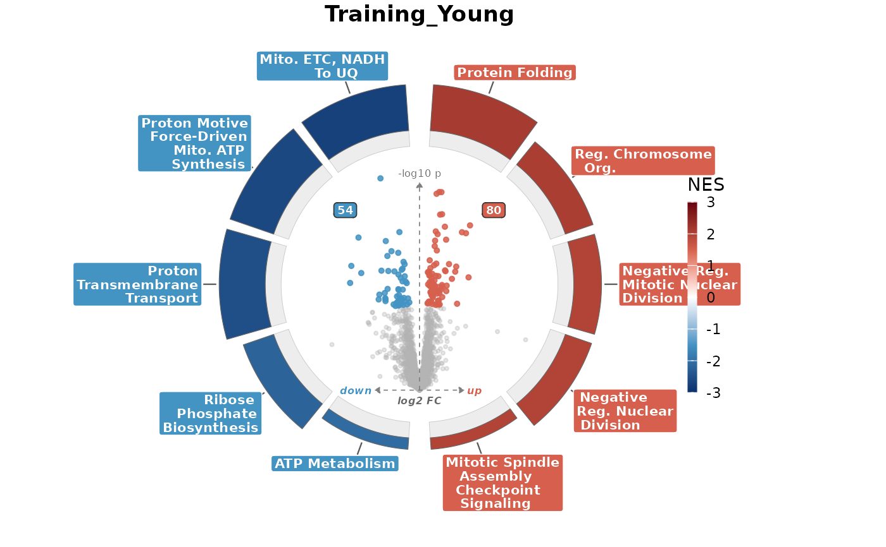

Draws a differential-abundance volcano embedded in a ring of enrichment terms. NES-coloured arcs sit around the volcano; tick lines drop from the arcs to each pathway's leading-edge genes inside the volcano.
Usage
volcano_ring(
volc_df,
enrich_df,
gene_col = "gene",
logfc_col = "logFC",
pval_col = "P.Value",
padj_col = "padj",
volc_sig_col = NULL,
term_col = "pathway",
nes_col = "NES",
size_col = "size",
genes_col = NULL,
genes_sep = NULL,
p_threshold = 0.05,
logfc_threshold = 0,
title = NULL,
subtitle = NULL,
tag = NULL,
volcano_radius = 4,
x_scale = 1,
y_scale = 1,
ring_radius = 4.8,
ring_thickness = 0.55,
tick_width = 0.3,
label_headroom = 0.5,
disc_color = NULL,
nes_limits = NULL,
magnitude = c("neg_log_padj", "size"),
arc_order = c("padj", "nes"),
arc_height_range = c(0.4, 1.6),
show_counts = TRUE,
point_size = 1.1,
point_alpha = 0.85,
label_size = 2.8,
label_gap = 0.6,
count_size = 2.4,
count_x_mult = 0.7,
count_y_mult = 0.7,
axis_size = 2.2,
label_mode = c("none", "top_per_direction", "by_significance", "by_genes"),
label_n = 5,
label_rank_by = c("significance", "logfc"),
label_genes = NULL,
theme = volcano_ring_theme()
)Arguments
- volc_df
Tidy DA tibble for a single contrast.
- enrich_df
Tidy enrichment tibble for the same contrast.
- gene_col, logfc_col, pval_col, padj_col
Column names in
volc_df.- volc_sig_col
Optional column in
volc_dfused to call point significance (e.g. a pi-value), decoupled from the enrichmentpadj_col.NULLfalls back topadj_colthenpval_col. The y-axis stays-log10(pval_col)regardless.- term_col, nes_col, size_col
Column names in
enrich_df.padj_colis reused for the enrichment-side adjusted-p column.- genes_col
Optional column name in
enrich_dfcarrying leading-edge genes.NULLtriggers auto-detect (Q4).- genes_sep
Separator for the leading-edge string.
NULLdefers to the auto-detected default.- p_threshold
Cutoff applied to
padj_colinvolc_df.- logfc_threshold
Effect-size cutoff; a point is called up/down only when
abs(logFC) >= logfc_thresholdas well as significant.- title, subtitle, tag
Plot text.
- volcano_radius
Inner volcano radius.
- x_scale
Horizontal compression of the point cloud (default 1). Values below 1 pull points toward the fold-change axis so the widest points clear the enrichment ring; the up/down axis annotations are unaffected.
- y_scale
Vertical compression of the point cloud (default 1), anchored at the fold-change axis. Values below 1 lower the tallest points so they clear the
-log10 plabel at the top of the volcano.- ring_radius
Inner radius of the enrichment ring (default 4.8), where the leading-edge tick band begins. Raise it to widen the central breathing gap around the volcano, lower it to close it. Keep it above
volcano_radius * 0.92so the point cloud clears the ring.- ring_thickness
Radial width of the tick band between
ring_radiusand the foot of the coloured arcs (default 0.55). This is the length of the leading-edge ticks; widen it to make ticks easier to read.- tick_width
Line width of the leading-edge ticks (default 0.3).
- label_headroom
Extra radial room (data units, default 0.5) reserved beyond the outermost pathway label so its box stays enclosed within the square panel rather than clipping or spilling into a neighbour. Raise it when wide label boxes are clipped; lower it to pack the ring tighter.
- disc_color
Optional fill for a tinted central disc.
- nes_limits
Length-2 numeric or
NULL; defaults toc(-3, 3).- magnitude
"neg_log_padj"(default) or"size"; controls arc thickness encoding.- arc_order
Angular order of arcs within each up/down half:
"padj"(default, lowest FDR first) or"nes"(strongestabs(NES)first). The up/down split itself is always by NES sign.- arc_height_range
Length-2 numeric
c(min, max)for the shortest and tallest arc; widen it to exaggerate the magnitude encoding.- show_counts
Draw the up/down significant-point count badges.
- point_size, point_alpha
Volcano point size (default 1.1) and opacity.
- label_size
Pathway-label text size.
- label_gap
Radial gap between each arc's outer top and its own label (default 0.6). Anchoring per-arc keeps every leader line the same short length regardless of arc height; the label box grows outward from this point so it never overlaps the arc. Widen it to lengthen all leaders.
- count_size
Text size of the up/down count badges (default 2.4).
- count_x_mult, count_y_mult
Badge position as a fraction of the volcano radius (default 0.7).
- axis_size
Text size of the
up/down/log2 FC/-log10 paxis annotations (default 2.2).- label_mode, label_n, label_rank_by, label_genes
Volcano point labels.
- theme
Output of
volcano_ring_theme().
Details
Column-naming arguments default to limma + fgsea conventions. The tick
column is auto-detected from leading_edge / leadingEdge /
core_enrichment / Genes unless genes_col is supplied.
Examples
da <- read.csv(system.file("extdata", "examples", "yvo_da.csv",
package = "enrichVolcano"
))
en <- read.csv(system.file("extdata", "examples", "yvo_enrichment.csv",
package = "enrichVolcano"
))
ctr <- "Training_Young"
da1 <- da[da$contrast == ctr, ]
names(da1)[names(da1) == "adj.P.Val"] <- "padj"
# ring the volcano with this contrast's ten strongest GO-BP terms
en1 <- en[en$contrast == ctr & en$database == "GO_BP", ]
en1 <- en1[order(en1$padj), ]
en1 <- head(en1[!duplicated(en1$pathway), ], 10)
volcano_ring(da1, en1, title = ctr)
#> No tick-line column found; tick lines off.
